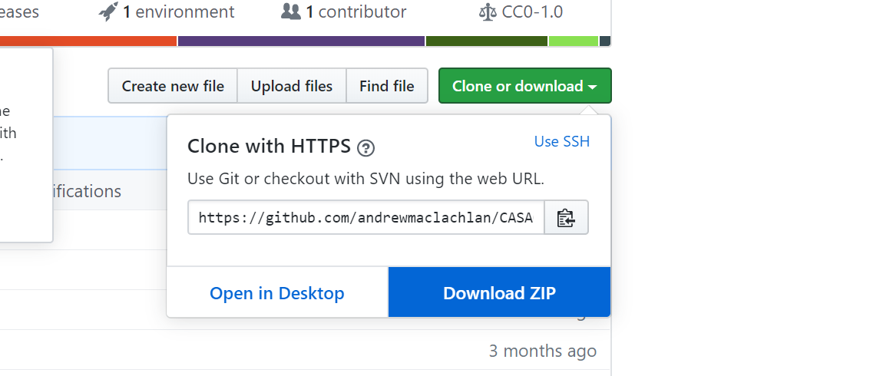

Hello GIS
Spatial analysis can yield fascinating insights into geographical relationships. However, at times it can be difficult to work with. You will get lots of error messages and have software crash. The academic staff are here to help you work through these practicals but we do not know everything. It’s a good idea to become familar with online sources of help, such as:
Want to see what you can do with spatial analysis…check out this ‘What’s Next’ video produced for the ESRI conference…
Intended course learning outcomes
After having taking this module, you should be able to:
Develop a working knowledge of QGIS and R to support the application of GI Science techniques
Visualise geographic information through producing appropriate maps to high cartographic standards
Carry out spatial data management tasks (joining attribute to geometry data, cleaning data, converting between file formats and spatial reference systems)
Interpret data and apply relevant spatial analyses (e.g. auto correlation/hot spot analysis, areal interpolation, point in polygon/buffer analysis, spatial statistical analysis) to answer a variety of spatial problems
Explain and evaluate common issues with geographic data such as representation and uncertainty
Apply and critique (spatial) statistical analysis techniques to infer relationships between spatial phenomena
Experience the diversity of the global spatial data landscape and evaluate the relative drawbacks and merits of different spatial datasets
There is a lot of information within this practical book and we do not expect you to read everything we link to. You should attend each lecture, go through every practical and do some associated reading.
This is a 15 credit module, equivalent to 150 hours of study (including the taught sessions). Outside of our lectures and practical sessions (3 hours a week) you should be spending an extra 12 hours a week on this module.
How to use this book
To get the most out of this book spend a few minutes learning how to control it, in the top right of this webpage you will see this tools bar:
From left to right these buttons will let you:
control the side bar
search the entire book for a specific word
change the text size, font, colour
propose an edit if you see a mistake that I can review
view the webpage in the ‘raw’ RMarkdown format, we cover RMarkdown in the course
information about shortcuts for this book and most others like it
In addition the icon in the top right of the page takes you to the GitHub repository for this book, we cover GitHub in the course, but it’s basically where the online files for the book are stored.
Getting started
One of the issues with GIS is that many of the files we will be working with are quite large. Fortunately in recent years UCL has seriously beefed up the storage available for students. You now get 100GB of free storage, which should be plenty for the work you will be doing this year! The Bartlett faculty has several gigabytes of storage space available on their central servers, so before we get started, we will connect to our N drive to carry out all of our practical work over the coming weeks.
The data we use in this practical book is representative of what you will find when conducting independent analysis. Some books and website will give you perfectly ‘clean’ and ‘ready to use’ data, we have not done this on purpose as it’s very important to master data wrangling (also called data manipulation). In the ‘real world’ data is messy and it’s vital you know how to deal with it. Take this quote from the New York Times for example…
“Data scientists, according to interviews and expert estimates, spend from 50 percent to 80 percent of their time mired in this more mundane labor of collecting and preparing unruly digital data, before it can be explored for useful nuggets.”
How to download data and files from GitHub
The majority of data required for the workshops is found online and we detail how to download this within the workshops. On occasion you may need to get some data from my GitHub, the workshops will instruct you to do this where needed.
To do so you have a few options. Option 1 will let you download just a spceific folder whilst option 2 will download everything i have used to make the workshops.
Option 1
Use DownGit
Head over to the GitHub repository: https://github.com/andrewmaclachlan/CASA0005repo
Select a folder you wish to download — here i’ll use practical data as the example, click into the folder (prac7_data) and copy the url: https://github.com/andrewmaclachlan/CASA0005repo/tree/master/prac7_data
Paste it into DownGit and click Download, once downloaded then unzip the folder.
Option 2
Go to the online repository page here: https://github.com/andrewmaclachlan/CASA0005repo
Click Clone or download, the download as ZIP. This will download the everything i have used to make this website including all the data for the practicals

Self guided learning
The lectures and practicals of this course only form a part of the learning process. You are expected to undertake wider reading and explore new methods and approaches. We have provided guidance on useful resources throughout the course to use as a starting point but you are encouraged to go beyond our recommedations and fully engage with applied GIS research, methods and visualisation techniques.
If you find a practical particularly easy or straightforward then please move on to the next one. Practicals that look at analytical relationships also have extension activities for you to try.
Interactive lectures
During the lectures we will be using an interative polling and Q&A application called vevox. It’s very simple to use, you can either:
- Download the app on iOS or Android: http://get.vevox.app
- Use the web app: https://vevox.app/
The meeting ID we will use is: 186-395-009
More help
If you need specific assistance with this course please:
Check the Moodle assessment tab for queries relating to assignments / deadlines. There is also an expected assignment timeline and frequently asked questions section within the assessment outline document.
Speak to a member of the teaching team in the computer lab sessions
Ask a question at the end of a lecture (time permitting)
Ask a question on slack under the GIS channel— you should have recevied an invite email from Steve Gray otherwise use this link. The teaching team will monitor this — use the #gis channel for this course.
Due to the size of the class we will only reply to messages on slack so all students can see the discussion. If you have a personal matter in relation to completing the course then please speak to or email Andy or Adam.
If you are struggling to use R don’t worry…here is some advice from a tweet and interview with Hadley Wickham, chief scientist at RStudio…
You're doing it right if you get frustrated: if you're not frustrated, you're (probably) not stretching yourself mentally
— Hadley Wickham ((???)) 11. Februar 2015
It’s easy when you start out programming to get really frustrated and think, “Oh it’s me, I’m really stupid,” or, “I’m not made out to program.” But, that is absolutely not the case. Everyone gets frustrated. I still get frustrated occasionally when writing R code. It’s just a natural part of programming. So, it happens to everyone and gets less and less over time. Don’t blame yourself. Just take a break, do something fun, and then come back and try again later.
You can also go through other free resources including:
At the end of every practical there is a link anonymous Google feeback form, let us know if something is unclear and we will go over it in a future session.
If after pursuing all these avenues you still need help you can book into our office hours. These meetings are to discuss a geographical concept in relation to the material/assessment or for any personal matters relevant to the completion of the module.
These meetings are not to be used for specific technical issues. Problems of this nature should be addressed in the practical sessions.
If you give us minimal information in this form (e.g. one word) we will cancel the meeting.
Noticed a mistake?
No one is perfect, if you notice a mistake let us know through the GitHub issues tab
Don’t worry if you are unsure about what GitHub is we cover it in the course.
Assignment resources
Want some tips for resources on your assignment?…. head over to the Assignment resources pages
Reading list
We link to books and resources throughout each practical and in the Assignment resources pages, but a full reading list for the course is provided on the UCL library reading list page for the course, there is also a link to it over on Moodle.
We’ve tried to mostly recommend open source and free books, any others are available from the library.